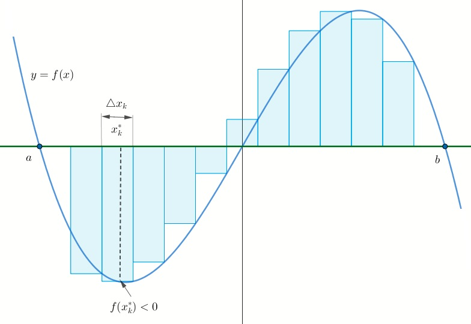

La integral definida
La integral definida
Como se ha visto en la sección anterior, el área bajo la gráfica de una función continua no negativa sobre un intervalo \([a,b]\) se define como el límite de una suma. El concepto de integral definida se construye mediante un proceso similar.
Se considera \(y=f(x)\) una función definida sobre un intervalo cerrado \([a,b]\) y se tienen en cuenta los siguientes pasos:
Divida el intervalo \([a,b]\) en \(n\) subintervalos \([x_{k-1},x_k]\), de anchos \(\bigtriangleup_{x_k}=x_k-x_{k-1}\) \[a=x_0 <x_1< x_2< \cdots x_{n-1}<x_n=b\] a esta colección de números se les llama partición del intervalo y se denota por \(P\).
Sea \(\|P\|\) el mayor número de los \(n\) anchos de los subintervalos \(\bigtriangleup_{x_1},\bigtriangleup_{x_2},\cdots,\bigtriangleup_{x_n}\). El número \(\|P\|\) se denomina norma de la partición \(P\).
Escoja un número \(x_k^{\ast}\) en cada subintervalo \([x_{k-1},x_k]\).
Figura 4: Partición P del intervalo \([a,b]\)
Forme la suma \[\sum_{k=1}^n f(x_k^{\ast})\bigtriangleup_k\]
Estas sumas que correponden a varias particiones de \([a,b] \) se denominan sumas de Riemman en honor al famoso matemático alemán Georg Friedrich Bernhard Riemman.
Debe notarse que aunque el procedimiento anterior es semejante a los utilizados en área bajo la curva, una diferencia importante es que una suma de Riemman no requiere que \(f\) sea continua o no negativa sobre \([a,b]\), además no necesariamente representa una aproximación del área bajo la gráfica.

Figura 5: Suma de Riemman que relacionada un intervalo donde \(f(x)<0\) y otro
donde \(f(x)>0\)
Se debe tener en cuenta que el área bajo una gráfica se refiere al área acotada entre la gráfica de una función continua no negativa y el eje \(x\). Una suma de Riemman puede contener términos \(f(x_k^{\ast})\bigtriangleup_k\) donde \(f(x_k^{\ast})< 0\); en este caso los valores \(f(x_k^{\ast})\bigtriangleup_k\) son números negativos de las áreas de rectángulos trazados bajo el eje \(x\).